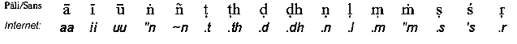

Ðại
Niệm Xứ [04]Quán Sát Pháp Trong Pháp(tiếp theo) 2. Chân Lý Cao Thượng về Nguyên Nhân của Sự Khổ Ðức Phật giảng giải chân lý thứ hai như sau:
Trong bài pháp đầu tiên Ðức Phật cũng đã giảng giải chân lý thứ hai này. Phật giáo là đạo duy nhất chỉ rõ rằng tham ái chính là nguồn gốc của sự đau khổ và là nguồn gốc của đời sống. Phật giáo không chấp nhận sự sáng tạo hay đấng sáng tạo nào là nguồn gốc của sự đau khổ. Thật vậy, Phật giáo không chấp nhận sự hiện hữu của một đấng sáng tạo. Lời nói này khi được tuyên bố lần đầu tiên đã làm chấn động mọi người. Tham ái là một lực di chuyển, chuyên chỡ. Nếu bạn hoàn toàn không có tham ái thì bạn sẽ không bị tái sanh. Chẳng hạn, khi bạn muốn đi đến Hoa Thịnh Ðốn thì bạn sẽ đi và sẽ đến đó, bởi vì bạn có sự mong muốn. Khi bạn không có ý muốn đến đó thì bạn không thể đến đó được. Cũng vậy, khi bạn có tham ái vào đời sống hiện hữu thì lòng tham ái của bạn sẽ tạo ra sự tái sanh. Ðó là lý do tại sao nói rằng ái dục tạo ra sự tái sanh mới. Ngay cả việc làm điều thiện với chủ đích mong cầu được sự tái sinh tốt đẹp hơn thì cũng giữ bạn trong vòng tái sanh. Ái dục được "đồng hóa" (sahaagata) với thú vui và dục lạc. Như vậy trong thực tế ái dục chẳng gì khác hơn là sự ưa thích và tham dục. "Luôn luôn tìm kiếm một sự thích thú mới lúc chỗ này, lúc chỗ kia", có nghĩa là có sự ưa thích mới mẻ, bất kỳ nơi nào chúng sinh được sinh ra. Khi chúng sinh được sinh ra trong bất kỳ một đời sống nào thì tư tưởng tích cực đầu tiên khởi sanh trong chúng sanh đó là tư tưởng tham ái vào đời sống hiện hữu, tư tưởng dính mắc vào cuộc sống. Chúng sanh khởi đầu đi vào cuộc sống với tham ái. Khi chúng sanh được tái sanh là một con người thì sẽ tham luyến vào cuộc sống con người. Khi tái sanh là một vị trời sẽ tham luyến vào đời sống trên cõi trời. Có ba loại ái dục: dục ái, hữu ái và vô hữu ái.
Dầu loại ái dục nào đi nữa cũng gây ra sự tái sinh mới. Một cách đơn giản, chúng là sự ưa thích và tham dục, và ái dục đưa đến sự thỏa thích trong đời sống này hay đời sống kia. Chính ái dục này là nguồn gốc hay nguyên nhân của sự đau khổ. Có những nguyên nhân khác như vô minh cũng gây ra đau khổ. Nhưng ái dục được liệt kê đơn độc như là nguồn gốc của sự đau khổ bởi vì nó là nguyên nhân đặc biệt của sự đau khổ. Nó gây ra đau khổ với sự hỗ trợ của những nguyên nhân khác. Ðức Phật đã dạy cho chúng ta phần căn bản của loại tham ái này với đầy đủ chi tiết.
Ở đây, "khởi sinh" có nghĩa là sự khởi sinh đầu tiên, "trú" có nghĩa là sự khởi sinh lập đi lập lại nhiều lần. Hoặc theo phụ chú giải thì "khởi sinh" cũng có nghĩa là khởi sinh hay xảy ra trong tâm và "trú" có nghĩa là nằm ngủ hay tiềm tàng trong tâm. Có ba mức độ phiền não:
Vào lúc bạn không giận hay bực mình ai thì tạm gọi là sân hận vắng mặt trong bạn. Nhưng khả năng nổi giận vẫn có mặt trong bạn ở trạng thái tiềm ẩn. Khi có nguyên nhân thì bạn nỗi sân. Sân hận khởi sinh trong tâm rồi nỗi lên bề mặt. Trước kia sự sân hận không hiện diện trong tâm bạn, nhưng nay, khi bạn sân hận thì sự sân hận thật sự có mặt. Ðó là phiền não đã từ giai đoạn tiềm ẩn chuyển sang giai đoạn khởi sinh, và giai đoạn kế tiếp là bộc phát ra hành động. Khi phiền não đã bước sang giai đoạn này thì phiền não không còn ở trong tâm mà nhảy ra ngoài bằng tác động. Lúc bấy giờ bạn có thể gây gỗ, có thể đánh đập và có thể giết người nữa. Giai đoạn phiền não biểu hiện qua hành động là giai đoạn thô tháo nhất của sân hận. ở đây "trú" thuộc vào giai đoạn phiền não thứ nhất, đó là giai đoạn tiềm ẩn, và "khởi sinh" là ở giai đoạn phiền não thứ hai. Ðối với sự vật đẹp đẽ, đáng yêu thì loại phiền não này khởi sinh và tự lập đi lập lại nhiều lần; hoặc nó tiềm ẩn trong những vật đáng yêu đó và tùy thuộc vào chúng mà nổi dậy.
Mắt, tai, mũi, lưỡi, thân và tâm có thể là những vật đáng yêu, đáng mến và bạn có thể bị dính mắc, tham luyến vào chúng nên tham ái khởi sinh và trú trong tâm bạn.
Khi bạn dính mắc tham luyến vào chúng thì ái dục khởi sinh và trú trong tâm bạn
"Nhãn thức" có nghĩa là sự nhận biết từ mắt hay còn gọi là thức thấy. Những thức khác cũng được hiểu tương tự như vậy.
"Nhãn xúc" có nghĩa là sự xúc chạm bằng tâm khởi lên khi vật thấy, mắt và nhãn thức phối hợp với nhau. Nhãn xúc là một tâm sở.
Tùy thuộc vào và song song với xúc mà thọ phát sinh.
Cùng với nhãn thức v.v... mà tưởng cũng khởi lên. Tưởng (sa~n~na) đã tạo nên tướng hay hình ảnh hoặc dấu hiệu, là một điều kiện để nhận ra rằng "chính là nó", giống như thợ mộc làm dấu trên gỗ để khi dùng có thể nhận ra khúc gỗ mà mình đã đánh dấu. Khi bạn thấy một đối tượng thì bạn ghi nhận "đây là đàn ông, đây là đàn bà" hay "cái này đẹp" thì tưởng khởi sinh trong bạn.
"Tác ý" là cái gì mà mình muốn, cố ý làm. Tác ý cũng là một tâm sở. Nó hoàn thành công năng của chính nó và công năng của những tâm sở khác.
"Sắc ái" hay "tham ái vào hình sắc", "thinh ái" hay "tham ái vào âm thanh".... là kết quả của các loại ái dục khác. Sắc ái, thinh ái... là chân lý cao cả thứ nhất (khổ). Ái dục phát sinh từ sắc ái này là loại chân lý cao cả thứ hai (tập đế). Khi bạn bắt đầu biết rằng bạn có sắc ái, thinh ái... thì bạn hiểu được chân lý thứ nhất. Khi bạn bắt đầu biết rằng sắc ái, thinh ái... này đã gây nên một loại ái dục khác thì bạn hiểu chân lý thứ hai.
"Tầm", tầm ở đây có nghĩa là hướng tâm đến đối tượng. Tầm ở đây phải hiểu theo nghĩa của tầm "vitakka" trong Vi Diệu Pháp, nó là một tâm sở.
"Tứ" (vicaara) theo Vi Diệu Pháp là đặt tâm trên đối tượng cũng là một tâm sở. Sự khác biệt giữa vitakka và vicaara được giảng giải trong Thanh Tịnh Ðạo (Visuddhimagga) như sau:
Tất cả những yếu tố trên đều đáng yêu, đáng mến. Chúng là đối tượng của tham ái. Tham ái tùy thuộc vào chúng mà khởi sinh và trú. 3. Chân lý cao thượng về sự chấm dứt đau khổ Chân lý thứ ba còn gọi là Diệt đế, chân lý về sự chấm dứt đau khổ, thường được hiểu là Niết Bàn (nibbaana). Ðức Phật đã diễn tả chân lý cao thượng thứ ba như sau: Nó hoàn toàn diệt tắt, bằng cách loại trừ, loại bỏ, hay vất bỏ hoặc giải thoát khỏi và không dính mắc vào chính ái dục này. Chân lý cao thượng về sự chấm dứt đau khổ có nghĩa là hoàn toàn dập tắt bằng cách loại trừ ái dục đã được diễn tả trong chân lý hay diệu đế thứ hai. "Hoàn toàn dập tắt bằng cách loại trừ" được dịch từ câu Paa.li: Asesa-viraaga-nirodha. Câu Paa.li này có thể được dịch một cách khác, chẳng hạn như: "Hoàn toàn diệt tắt và hoàn toàn loại trừ chính ái dục đó". Có nghĩa là chân lý cao cả về sự chấm dứt đau khổ hay Niết Bàn là sự dập tắt hay loại trừ ái dục. Chân lý thứ ba hay diệt đế chẳng khác nào một loại dụng cụ để khử trừ ái dục. Khi thiền sinh nhận chân được chân lý hay giác ngộ thì tâm họ khởi sinh một loại tâm gọi là "đạo tâm". Ðạo tâm nhận Niết Bàn hay sự diệt tắt đau khổ làm đối tượng và có công năng loại trừ ái dục hay phiền não trong tâm. Ðạo tâm đã loại trừ phiền não như thế nào? Phải chăng đạo tâm loại trừ phiền não quá khứ? Nếu vậy thì nó chẳng có hiệu quả gì. Nó chẳng loại trừ được gì cả, bởi vì vào lúc có đạo tâm thì phiền não đã vắng mặt rồi. Phải chăng đạo tâm diệt trừ phiền não tương lai? Nếu vậy thì đạo tâm cũng chẳng có hiệu quả gì, bởi vì vào lúc có đạo tâm thì những phiền não tương lai chưa có mặt. Vậy thì, phải chăng đạo tâm diệt trừ phiền não trong hiện tại. Nếu như vậy ta có thể nói rằng đạo tâm đi cùng với phiền não. Nhưng theo Vi Diệu Pháp thì thiện và bất thiện tâm sở không thể khởi sinh cùng lúc được cho nên đạo tâm và phiền não không thể đồng sanh khởi. Cũng có thể lập luận rằng những phiền não khởi sinh không cùng với một loại tâm nào cả. Nhưng không hề có chuyện một phiền não trong hiện tại không phối hợp với một tâm. Bởi vậy, chúng ta không thể nói rằng đạo tâm loại trừ phiền não trong hiện tại. Như thế, tóm lại hình như có thể nói rằng đạo tâm chẳng loại bỏ được gì cả. Vậy đạo tâm đã loại trừ được gì? Theo các nhà chú giải thì phiền não "là mãnh đất để cấy trồng" và mãnh đất này đã bị loại trừ bỡi đạo tâm. "Ðất" ở đây có nghĩa là ngũ uẩn trong tam giới, là đối tượng của Thiền minh sát (vipassanaa). "Ðất để trồng" có nghĩa là những phiền não có thể khởi sinh đối với ngũ uẩn này. Phiền não bị loại trừ bởi đạo tâm không thuộc vào quá khứ, cũng không thuộc vào tương lai, cũng không thuộc vào hiện tại. Cái mà đạo tâm loại trừ là phiền não ngủ ngầm hay khả năng trổi dậy của phiền não. Bạn có phiền não nhưng không phải phiền não lúc nào cũng có mặt trong tâm bạn. Bởi vì phiền não ngủ ngầm chỉ khởi dậy trong tâm bạn khi có điều kiện, nên bạn có thể nói rằng bạn có những phiền não này mặc dầu hiện tại chúng không có mặt. Bạn chắc chắn có loại phiền não ngủ ngầm này và có thể loại trừ khả năng khởi sinh phiền não của chúng. Chúng ta hãy lấy ví dụ về một cây xoài để hiểu thêm về sự loại trừ phiền não. Nếu bạn không muốn cho cây xoài ra trái, bạn không cần phải loại trừ trái của chúng trong quá khứ, trong hiện tại hay trong tương lai mà bạn phải dùng thuốc hoá học để khiến khả năng ra trái trong tương lai của cây xoài bị loại trừ. Tương tự như thế, không phải là loại trừ phiền não quá khứ, hiện tại hay tương lai mà loại trừ khả năng khởi sinh phiền não trong tương lai. Vào lúc có đạo tâm thì phiền não ngủ ngầm hay khả năng khởi sinh phiền não bị hũy diệt và đạo tâm lấy sự chấm dứt đau khổ hay Niết Bàn làm đề mục[26] Chân lý thứ ba hay Niết Bàn (nibbaana) rất khó diễn giải bởi vì Niết Bàn không thuộc vào thế giới này. Bởi vì chúng ta đã quen sống trong thế tục này, nhìn sự vật theo nhãn quan thế tục nên khó có thể hiểu được Niết Bàn. Niết Bàn khác hẵn với những gì mà chúng ta biết hay từng kinh nghiệm qua. Câu chuyện về con rùa rời khỏi nước đi chơi trên đất liền trở về gặp cá cho ta hiểu phần nào sự khó khăn để hiểu Niết Bàn. Rùa lên đất liền chơi trở về gặp cá. Cá hỏi rùa đi đâu, rùa trả lời: - Mình vừa mới đi bộ trên đất liền. Cá hỏi: - Bạn bơi trên đất liền phải không? Rùa trả lời: - Không, tôi đi bộ trên đất. Cá không thể nào hiểu được thế nào là đất liền bởi vì cá chưa bao giờ có kinh nghiệm như vậy. Cá nghĩ rằng đất liền phải là một loại chất lỏng mà nó có thể bơi lội trong đó. Cũng vậy, Niết Bàn khác biệt với những gì mà chúng ta thường sống và những gì mà chúng ta có hay chúng ta kinh nghiệm được trong thế gian này. Thật khó để hiểu hay để mô tả Niết Bàn. Bởi vì Niết Bàn hoàn toàn đối nghịch lại những điều kiện trên thế gian nên Niết Bàn thường được diễn tả bằng những từ phủ định như là: diệt tắt đau khổ, không có duyên sinh, không tướng, không sinh, không già, không đau, không chết. Phần lớn đều được diễn tả bằng những từ phủ định; bởi vì khó có thể diễn tả bằng những từ xác định được. Chẳng hạn có người bảo bạn hãy diễn tả cho biết thế nào là sức khỏe. Bạn làm thế nào để diễn tả? Phải chăng bạn có thể nói đó là sự vắng mặt của đau yếu, bệnh hoạn. Tuy rằng chúng ta dùng hình thức phủ định để mô tả Niết Bàn nhưng điều này không có nghĩa Niết Bàn là phủ định. Niết Bàn không phủ định cũng không xác định vì nó không hiện hữu. Chỉ có những gì hiện hữu mới có phủ định hay xác định. Niết Bàn không phải là một trạng thái cũng không phải là một tình trạng hay điều kiện của tâm trong một thời gian đặc biệt nào đó, cũng không phải là một vị trí hay một nơi chốn hay cảnh giới nào. Một cách đơn giản là bạn không thể nào mô tả được Niết Bàn. Niết Bàn chỉ có nghĩa là dập tắt phiền não và chấm dứt đau khổ. Nhiều người hỏi rằng liệu có hạnh phúc trong Niết Bàn không? Câu hỏi này cũng không thích hợp bởi vì nó đã nêu tiền đề rằng Niết Bàn là một nơi hay một sự hiện hữu hoặc một trạng thái của tâm. Vì Niết Bàn không phải là một nơi hay một sự hiện hữu hoặc một trạng thái của tâm nên bạn không thể nói có đau khổ hay hạnh phúc trong Niết Bàn. Niết Bàn là sự vắng bóng của đau khổ và vắng bóng của phiền não. Thêm vào đó, Niết Bàn cũng không phải là kết quả của con đường dẫn đến Niết Bàn. Chỉ có sự nhận chân hay sự đạt Niết Bàn mới là kết quả của đạo. Ðó là kết quả của Thiền Minh Sát. Nếu Niết Bàn là kết quả của một điều gì đó thì Niết Bàn phải có khởi đầu và chấm dứt. Nếu có khởi đầu và chấm dứt thì Niết Bàn không vĩnh cửu và không phải là hạnh phúc thật sự. Niết Bàn không phải là kết quả của đạo cũng như thành phố không phải là kết quả của con đường, nhưng muốn đến được thành phố thì phải dùng con đường. Giác ngộ hay Niết Bàn là kết quả thực hành Thiền Minh Sát. Không thể nói Niết Bàn là kết quả của một thứ gì cả. Cũng không thể nói Niết Bàn là có hình dáng, màu sắc, kích thước hay tuổi tác. Chúng ta hãy nhớ lại những câu hỏi mà vua Milinda đã hỏi Ðại đức Naagasena ở chương trước. Ðại đức đã nói rằng: "Không thể có cái gì để đối chiếu được, thưa Ðại vương, không thể dùng ví dụ hay lý luận, hay những nguyên nhân gì hay những phương pháp gì để chỉ cho thấy rõ hình dáng, mô mẫu, tuổi tác hay kích thước của Niết Bàn".[27] Bạn không thể nói Niết Bàn là sáng hay mờ, tròn hay vuông, lớn hay nhỏ hay bất kỳ thế nào. Không thể dùng những ngôn từ như thế để mô tả Niết Bàn được. Kinh thứ mười một trong Trường Bộ Kinh và kinh thứ bốn mươi chín trong Trung Bộ Kinh mô tả Niết Bàn là Sabbatopabha. Các nhà luận sư đã giải thích danh từ này là "chiếu sáng khắp mọi nơi". Tuy nhiên, không thể hiểu nghĩa đen như vậy. Niết Bàn được gọi là "chiếu sáng", bởi vì nó không bị ô nhiễm bởi phiền não. Hòa thượng Mahasi đã giải thích như sau: Sắc hay vật chất có thể bị ô nhiễm vì bụi bặm. Danh như tâm vương hay tâm sở có thể tương ưng với tham, sân, si... bởi vậy, chúng có thể bị ô nhiễm. Ngay cả những tâm sở thiện cũng bị ô nhiểm khi có tham, sân, si đi trước hay theo sau. Trong khi đó Niết Bàn không thể tiếp xúc với bất kỳ ô nhiễm nào nên hoàn toàn tinh khiết. Ðó là ý nghĩa của Niết Bàn đã được các nhà chú giải gọi là "chiếu sáng khắp mọi nơi". Nhiều người dựa vào sự giải thích của chú giải cho rằng Niết Bàn là một ánh sáng rất sáng, nhưng ánh sáng là vật chất hay "sắc" (và không có vật chất trong Niết Bàn và chính Niết Bàn cũng không phải là vật chất) và như vậy lời giải thích của các nhà luận giải đi ngược lại lời dạy của Ðức Phật. Chỉ có thể giải thích rằng chỉ có sự diệt tận mới chiếu sáng khắp mọi nơi bởi vì nó hoàn toàn thoát khỏi mọi ô nhiểm của các pháp có điều kiện (pháp hành hay pháp hữu vi) là thích hợp mà thôi.[28] Ðức Phật mô tả Niết Bàn, trong bản kinh đầu tiên được nói trước đây như sau: Niết Bàn được biết (bởi trí tuệ của thánh đạo) không thể thấy được (bằng mắt trần). Nó không có giới hạn (sinh, diệt hay những gì khác sau khi có mặt), nó sáng tỏ khắp mọi nơi. ở đó không có thủy đại, không có địa đại, không có hỏa đại, không có phong đại. ở đó không có dài, không có ngắn, không có nhỏ, không có lớn, không có đẹp, không có xấu. ở đó thân và tâm đều diệt tận. Với sự diệt tận của thức tâm (nghiệp thức và tử thức của Alahán) tất cả mọi thứ ấy (thân tâm hay danh sắc) đều chấm dứt. Không nên có cảm tưởng sai lầm rằng Niết Bàn chỉ được diễn tả dưới hình thức phủ định. Niết Bàn cũng được diễn tả dưới hình thức xác định nữa, như: Chân lý, bờ bên kia, khó thấy, vĩnh viễn, tốt đẹp, an toàn, kỳ diệu, nguyên vẹn, thanh tịnh, tinh khiết, hải đảo, chỗ trú ngụ, an lạc cao tột v.v... [29] Cần nên hiểu rằng, mặc dầu Niết Bàn không thể được mô tả một cách đầy đủ, mặc dầu nó không được hiện hữu trong ý nghĩa là phải có ba giai đoạn hiện hữu: sinh, trụ, diệt, nhưng Niết Bàn là thực hữu. Niết Bàn có nơi sự chấm dứt ái dục, chấm dứt phiền não và chấm dứt đau khổ. Khi mô tả chân lý thứ ba Ðức Phật dạy: "Ðó là sự hoàn toàn diệt tắt ái dục". Như vậy Ðức Phật mô tả sự diệt tắt đau khổ như là sự diệt tắt ái dục. Ðau khổ chấm dứt với sự chấm dứt ái dục. Các nhà luận giải cho rằng Ðức Phật có thái độ như con sư tử. Sư tử hướng sức mạnh mình vào người bắn tên chứ không phải vào mũi tên; cũng vậy, Ðức Phật đối đầu với nguyên nhân chứ không với hậu quả. Khi dạy sự chấm dứt đau khổ Ðức Phật đã đối đầu với nguyên nhân. Khi nguyên nhân chấm dứt thì hậu quả (đau khổ) cũng bị diệt. Như vậy, muốn tận diệt đau khổ thì bạn phải tận diệt ái dục.[30.] Mặc dầu Niết Bàn, theo đặc tính an bình hay sự an bình, thì chỉ có một. Nhưng chúng ta có thể nói đến hai loại Niết Bàn: Hữu Dư Niết Bàn và Vô Dư Niết Bàn. Hữu Dư Niết Bàn (Sa-upaadisasena nibbaana) là Niết Bàn mà vẫn còn có ngũ uẩn và Vô Dư Niết Bàn (anupaadisesa nillaana) là Niết Bàn không còn ngũ uẩn. Vị Alahán đã đoạn tận tất cả phiền não, nhưng vị Alahán vẫn còn có thân và tâm, và thân tâm này là kết quả của nghiệp quá khứ. Bởi thế Niết Bàn được các vị Alahán chứng ngộ trong khi các ngài còn sống được gọi là Hữu Dư Niết Bàn vì vẫn còn ngũ uẩn. Khi vị Alahán chết thì ngũ uẩn còn lại vốn là đau khổ ngừng hiện hữu. Sự chấm dứt đau khổ vào lúc chết của vị Alahán được gọi là Vô Dư Niết Bàn, nghĩa là Niết Bàn không còn ngũ uẩn nữa. Hữu Dư Niết Bàn còn được gọi là "kilesa parinibbaana" hay "phiền não niết bàn", có nghĩa là hoàn toàn diệt tắt phiền não, và Vô Dư Niết Bàn được gọi là "khanda parinibbaana" hay "ngũ uẩn niết bàn" có nghĩa là hoàn toàn tận diệt ngũ uẩn. Trong lúc còn sống, vị Alahán kinh nghiệm phiền não Niết Bàn và khi chết thì ngũ uẩn Niết Bàn. Ðức Phật cũng đã giải thích khi nào ái dục bị loại trừ và khi nào ái dục chấm dứt. Ngài dùng những từ tương tự sau đây để giảng giải chân lý thứ hai:
Khi ái dục khởi sinh thì nó khởi sinh trên những vật gì khả ái trên thế gian này và khi ái dục bị loại trừ và diệt tận thì nó cũng bị loại trừ và diệt tận trên chính đối tượng tham ái đó. Ðó là sự tham ái vào vật đáng yêu bị loại trừ và diệt tận. Những vật đáng yêu, đáng mến nói ở đây cũng là những vật đáng yêu, đáng mến đã được đề cập đến trong đoạn nói về chân lý cao thượng thứ hai, như mắt, tai, mũi, lưỡi v.v... 4. Bát Chánh Ðạo Chân lý cao thượng cuối cùng là chân lý cao thượng về con đường dẫn đến sự diệt khổ. Ðó là Bát Chánh Ðạo hay Trung Ðạo của Ðức Phật.
Chánh Kiến
Ở đây, Chánh kiến có nghĩa là sự hiểu biết trực tiếp về Tứ Diệu Ðế đạt được qua sự thực hành. Còn có những loại Chánh Kiến khác, đó là biết rằng chúng sanh có nghiệp và quả của nghiệp, và hiểu biết trực tiếp ba tính chất của các pháp hữu vi. Chánh Tư Duy
"Ly dục tưởng", là suy tư đến sự từ bỏ, trở thành một vị tỳ khưu hay một ẩn sĩ thực hành thiền để đắc các tầng thiền (jhaana), đạo và quả. "Ly sân tưởng" là có tư tưởng từ ái. Khi bạn thực hành thiền niệm tâm từ thì Chánh Tư Duy này sẽ nỗi bật trong tâm bạn. "Ly hại tưởng" là có tâm bi mẫn. Khi bạn thiền niệm tâm bi bạn "cầu mong cho tất cả chúng sanh thoát khỏi phiền muộn..." thì loại Chánh Tư Duy này sẽ tràn ngập tâm bạn. Thanh Tịnh Ðạo giải thích Chánh Tư Duy là: "hướng tâm đến Niết Bàn". Theo vi diệu pháp thì Chánh Tư Duy là tâm sở "tầm" (vitakka) có nghĩa là khởi đầu áp đặt tâm vào đối tượng. Nhờ sự trợ giúp của vitakka mà tâm hướng đến đối tượng khiến cho Chánh Tư Duy sinh khởi; bởi vậy mặc dầu dịch là Chánh Tư Duy nhưng không có nghĩa là suy nghĩ mà là hướng tâm đến đối tượng thiền. Ta có thể dịch Sammaa sa"mkappa là Chánh Tư Duy hay Chánh Hướng Tâm tùy theo trường hợp. Chánh Ngữ
Nói dối nghĩa là nói lời không thật. Nói đâm thọc là đem chuyện người này nói cho người kia nghe, và đem chuyện người kia nói cho người này nghe khiến họ chia rẽ nhau. Nói lời nói dữ là nói lời nói nặng nề, xúc phạm, nhục mạ, chữi rủa, mắng nhiếc. Và lời nói vô ích là nói những lời nói không đem lại lợi ích và không có ý nghĩa gì cả. Tự chế, không nói bốn tà ngữ trên gọi là Chánh Ngữ. Khi bạn tránh xa các tà ngữ trên thì Chánh Ngữ sẽ có mặt trong bạn. Chánh Nghiệp
Như vậy Chánh Nghiệp là tránh xa ba tà nghiệp về thân. Chánh Mạng Chánh Mạng được mô tả trong kinh Tứ Niệm Xứ như sau:
Ðức Phật cho biết năm nghề nghiệp sau đây là tà mạng:
Tránh làm các nghề nghiệp trên và làm nghề lương thiện là Chánh Mng. Một phật tử chân chánh phải tránh xa các nghề nghiệp bất thiện trên. Chánh Mạng còn có nghĩa là không phạm bốn tà ngữ và ba tà nghiệp trong lối sống. Ba yếu tố: Chánh Ngữ, Chánh Nghiệp, Chánh Mạng được gọi là vitati có nghĩa là tự chế, thuộc về nhóm Giới. Có ba loại tự chế: Tự chế do cơ hội, tự chế do giới luật, tự chế do hoàn toàn loại trừ. Ðôi khi một người không giữ giới nhưng gặp trường hợp có thể làm điều sai lầm thì họ tự chế không làm điều sai lầm đó. Họ tự suy nghĩ đến thanh danh, tuổi tác và kinh nghiệm của mình nên họ tự khuyên nhủ: "Ta không nên làm điều đó, điều đó không hợp với tư cách của ta". Tự chế như thế là tự chế do cơ hội. Ðôi khi một người giữ giới, hành thiền rồi sau đó gặp hoàn cảnh có thể làm điều sai lầm họ liền nhớ lại giới luật mình đã thọ và họ tự chế làm điều sai lầm ấy. Ðó là tự chế do giới luật. Nhưng khi tự chế đã được thực hiện trọn vẹn nhờ đã loại bỏ tất cả phiền não lúc bước vào thánh đạo (ariya magga) thì gọi là tự chế do hoàn toàn loại trừ. Trong A.t.thasaalinii có nói đến hai câu chuyện về tự chế do cơ hội và tự chế do giới luật: Ở Tích Lan có một cư sĩ tên là Cakkana. Lúc còn trẻ,mẹ Cakkana đau một loại bệnh mà thầy thuốc bắt phải ăn thịt thỏ tươi. Người anh bảo Cakkana ra đồng bắt thỏ. Cakkana đi thẳng đến cánh đồng. Một con thỏ đang ăn thấy Cakkana vội bỏ chạy và dính vào một bụi dây leo, kêu la sợ hãi. Cakkana theo tiếng kêu và bắt được thỏ. Cầm thỏ trên tay Cakkana nghĩ: "Ta đã có thuốc cho mẹ rồi". Nhưng Cakkana lại nghĩ: "Lấy sinh mạng của một chúng sanh khác để cứu sinh mạng mẹ mình thì chẳng phải là phương cách tốt đẹp". Thế là Cakkana thả thỏ ra và nói: "Thỏ ơi, hãy đi ăn cỏ và uống nước thoải mái với các bạn khác trong rừng". Trở về nhà tay không, Cakkana gặp anh. Người anh hỏi: - Em bắt được thỏ không? Cakkana thuật lại mọi chuyện. Người anh mắng cậu bé một trận nhưng Cakkana vẫn không giận dữ. Cakkana đến gần bên mẹ với lòng thành thật nói rằng: "Từ lúc sinh ra đến nay con chưa giết hại một sinh vật nào. Với lời thành thật này cầu mong mẹ lành bệnh". Do năng lực của lời nói thành thật đó, mẹ Cakkana lành bệnh. Câu chuyện thứ hai nói đến một cư sĩ sống ở núi Uttara-vaddhamara. Sau khi xin giới từ trưởng lão Pingalabuddharakhita ở chùa Ambariya, cư sĩ ra đồng làm việc. Anh ta chăm lo cày bừa thửa ruộng của mình. Trưa hôm ấy, sau khi ăn cơm xong anh nằm nghỉ. Lúc thức dậy không thấy con bò đâu nữa, anh bèn chạy đi tìm. Anh vào núi Uttaravaddhhamra thì bị một con trăn quấn chặt. Sẵn rìu trong tay anh ta nghĩ: "Ta sẽ cắt đầu con trăn bằng cái rìu bén này". Nhưng anh lại nghĩ tiếp: "Ta mới xin giới sáng nay, ta không nên có ý nghĩ sát hại đó". Sau khi suy nghĩ ba lần, anh ta tự nhủ: "Ta phải giữ giới và chịu chết". Sợ còn giữ rìu trong tay, khi đau quá, có thể thay đổi ý định nên anh vất rìu ra thật xa. Ngay khi đó, trăn nới lỏng mình và bò đi nơi khác Chánh Tinh Tấn Chánh Tinh Tấn là cố gắng loại trừ những điều xấu đã có, cố gắng ngăn ngừa những điều xấu chưa xảy ra, cố gắng làm những việc lành đã từng làm, cố gắng làm những việc lành chưa có. Làm thế nào để loại trừ những điều bất thiện đã khởi sinh? Thật ra chúng đã khởi sinh và đã diệt mất rồi. Như vậy phải hiểu như thế nào về câu: "loại trừ những điều bất thiện đã khởi sinh"? Câu này có nghĩa là loại trừ những bất thiện mà bạn đã có trong quá khứ. Khi bạn nhớ đến những điều bất thiện đã làm thì bạn tạo ra những điều bất thiện mới bởi vì khi nghĩ đến những điều bất thiện đã làm, bạn nhớ lại với tâm hối hận, ăn năn mà hối hận ăn năn cũng là một bất thiện tâm. Hối hận ăn năn không những làm cho bạn khốn khổ mà còn làm gia tăng sự bất thiện của bạn. Bởi vậy, cách tốt nhất là hãy tự hứa không làm những điều bất thiện đó nữa trong tương lai và quên hẵn những điều bất thiện trong quá khứ đi. Ðó là những điều mà Ðức Phật đã dạy khi Ngài nói:
Phương pháp hoàn hảo nhất để loại trừ các bất thiện pháp trong quá khứ hay nghiệp là thực hành Thiền Minh Sát và trở thành một vị Alahán. Ðức Phật đã nói với Ðại Ðức Angulimala, nguyên là một tên cướp giết người nhưng về sau trở thành một vị Alahán: "Người nào trước làm việc ác, nay làm việc lành người ấy chẳng khác nào mặt trăng ra khỏi vầng mây u ám tỏa ánh sáng lung linh xuống trần gian đen tối".[34] Chánh Niệm Chánh niệm bao gồm trong bốn căn bản của sự Chánh niệm trong Tứ Niệm Xứ: niệm thân, niệm thọ, niệm tâm, niệm pháp. Chánh Ðịnh Ðức Phật lấy bốn tầng thiền để chỉ cho Chánh định. Mặc dầu bốn tầng thiền thuộc về thiền vắng lặng, nhưng bốn tầng thiền này cũng có thể làm căn bản cho Thiền Minh Sát. Ðối với những ai chọn thiền vắng lặng như con đường tu tập giác ngộ, nghĩa là đạt các tầng thiền vắng lặng trước rồi sau đó chuyển sang Thiền Minh Sát, thì các tầng thiền này có thể được chọn làm đối tượng để hành Thiền Minh Sát và như vậy các tầng thiền vắng lặng đã trở thành căn bản cho Thiền Minh Sát. Tuy nhiên, ở đây cũng nên hiểu rằng "sát na định" là Chánh Ðịnh bởi vì nếu không có sát na định thì sẽ không có Thiền Minh Sát cũng như sự giác ngộ. "Sát na định" có thể có được khi thiền sinh giữ tâm trên đối tượng trong một thời gian ngắn, một vài sát na chẳng hạn. Khi thiền sinh có thể giữ tâm trên đề mục lâu hơn, khoảng năm mười phút cho đến nửa tiếng, thì thiền sinh có tạm thời định. Vào lúc ấy thiền sinh có rất ít phóng tâm và ngay khi có phóng tâm đi nữa thiền sinh cũng có thể loại trừ được ngay. Trong kinh Tứ Niệm Xứ này cũng như trong nhiều kinh khác, Chánh Ðịnh được mô tả bao gồm bốn tầng định.
Muốn biết thêm về các tầng thiền hãy xem Chương Bốn của quyển Thanh Tịnh Ðạo (Visuddhi-magga). Một cách tổng quát, điều quan trọng cần biết về các tầng thiền là "dục lạc" và các tầng thiền đối kháng nhau. Dục lạc là chướng ngại của các tầng thiền. Khi bạn muốn đạt các tầng thiền thì bạn hãy tránh xa dục lạc và tinh tấn hành thiền vắng lặng. Dục lạc đối kháng với sự định tâm. Dục lạc cũng là chướng ngại đối với Thiền Minh Sát nữa. Bạn không nên trộn lẫn Thiền Minh Sát với dục lạc ngũ trần. Khi hành Thiền Minh Sát sự thực tập phải thật thanh tịnh nghĩa là không thể trộn lẫn Thiền Minh Sát với bất cứ gì dính líu đến dục lạc ngũ trần. Như bạn đã biết, tám chi của Bát Chánh Ðạo hay là Ðạo Ðế trong Tứ Diệu Ðế dẫn đến sự chấm dứt phiền não. Khi bạn thực tập Thiền Minh Sát, bạn đã đi trên con đường này. Năm chi trong Bát Chánh Ðạo là các chi tích cực. Ðó là Chánh Kiến, Chánh Tư Duy, Chánh Tinh Tấn, Chánh Niệm, và Chánh Ðịnh. Chúng được gọi là những chi tích cực vì chúng hoạt động tích cực trong khi thiền sinh hành thiền. Nếu không có Chánh Tư Duy, ở đây có nghĩa là Chánh Hướng Tâm, thì thiền sinh không thể hướng tâm vào đối tượng. Nếu không có Chánh Tinh Tấn hay nỗ lực thì thiền sinh cũng không thể đưa tâm đến đối tượng được. Nếu không có Chánh Niệm thì tâm không thể chạm đối tượng và chìm sâu vào đối tượng. Nếu không có Chánh Ðịnh thì tâm không thể ở tại đối tượng. Nếu không có Chánh Kiến thì tâm không thể xuyên thấu bản chất của sự vật để thấy đúng thực tánh của chúng được. Chánh Hướng Tâm hay Chánh Tư Duy hướng tâm vào đối tượng. Chánh Tinh Tấn hỗ trợ Chánh Tư Duy và các tâm sở khác. Chánh Niệm giúp tâm chạm vào đối tượng và đi sâu vào trong đối tượng. Chánh định giữ tâm trên đối tượng trong một thời gian dài hơn. Rồi Chánh Kiến giúp tâm thấy đối tượng một cách như thực. Khi việc hành thiền tiến triển tốt đẹp thì năm chi này làm việc một cách tích cực và quân bình. Ðó là lý do tại sao chúng được gọi là "những yếu tố tích cực" (Caaraca magganga). Ba chi còn lại là gì? Ðó là Chánh Ngữ, Chánh Nghiệp, và Chánh Mạng. Ba chi về giới này hầu như hoàn mãn khi bạn hành thiền. Trước khi hành thiền bạn giữ giới. Ðiều này có nghĩa là bạn tự chế một vài hành động. Ba sự tự chế này có thể không hiện diện trong bạn khi bạn đang hành thiền, bởi vì chúng chỉ hiện diện khi bạn lâm vào hoàn cảnh có thể phạm giới mà bạn tự chế, không vi phạm. Khi bạn đang hành thiền thì giới đã tròn đủ rồi. Như vậy, bạn có thể nói tám yếu tố trong Bát Chánh Ðạo đã làm việc trong khi bạn hành thiền. Tám chi pháp hay tám yếu tố này đã tạo nên con đường Giới-Ðịnh-Huệ.
Nếu Chánh Tư Duy không hướng tâm đến đối tượng thì Chánh Kiến cũng không thể thấy đối tượng đúng như thật. Do đó Chánh Tư Duy hay Chánh Hướng Tâm nằm trong nhóm Huệ. Ðến đây bạn đã biết rõ con đường Giới-Ðịnh-Huệ trong Bát Chánh Ðạo. Là những người học trò của Ðức Phật, chúng ta phải đi theo con đường này. Có bốn công năng nối liền với Tứ Diệu Ðế. Vào lúc quán thấu chân lý, đạo tuệ đã hành xử bốn công năng cùng một lúc:
Ðạo tuệ đã hành xử bốn công năng này trong cùng một sát na ngắn ngủi. Giống như ngọn đèn thể hiện bốn công năng cùng lúc - đốt cháy tim, loại trừ bóng đêm, phát ra ánh sáng và tiêu thụ dầu - đạo tuệ hiểu biết trọn vẹn đau khổ, tận diệt nguồn gốc đau khổ, khai mở đạo và chấm dứt đau khổ. Thiền sinh hiểu được chân lý của mình, chân lý của kẻ khác và cả hai chân lý của mình và của kẻ khác được xem là thiền sinh đã quán sát chân lý bên trong, bên ngoài và cả hai bên trong và bên ngoài. Hòa thượng Mahasi đã giải thích rằng vào lúc thiền sinh chánh niệm tỉnh giác chân lý thứ nhất và thứ hai nơi chính mình sau khi đã nhìn nhận sự tốt đẹp của chân lý thứ ba và thứ tư, và muốn chứng ngộ các chân lý này thì thiền sinh được xem là quán sát chân lý bên trong. Sau khi thấy sự vật bên trong chính mình một cách rõ ràng, thiền sinh quyết định và ý thức rằng sự vật bên ngoài cũng có cùng bản chất như thế. Quyết định và hiểu biết như vậy là quán sát chân lý bên ngoài. Hơn nữa, khi thiền sinh quán sát như thế nào những người khác đã ý thức sắc, thinh, hương, vị, xúc, pháp thì đó là quán sát sự thật bên ngoài. Mặc dầu bạn được khuyên là phải quán sát bốn chân lý nhưng bạn chỉ quán sát chân lý thứ nhất và chân lý thứ hai thôi; chân lý thứ ba và chân lý thứ tư không thể quán sát vì chúng không phải là đối tượng của Thiền Minh Sát và không thể thấy hay đạt được theo thế tục (putthujjana). Chú giải và Phụ chú giải giải thích rằng chỉ cần nghe là hai chân lý này thật tốt đẹp và có ý muốn biết và thành đạt chúng thì công năng của việc quán sát những chân lý này được trọn vẹn. Thiền sinh ý thức được bốn chân lý cao cả theo cách này sẽ không bị chi phối bởi tham ái và tà kiến và không dính mắc vào bất kỳ cái gì trên thế gian do ngũ uẩn tạo thành này. Như vậy, thiền sinh đã quán sát Pháp trong Pháp. -oOo- Phần trước | Mục Lục | Chương kế Source: Như Lai Thiền Viện - Tathagata Meditation Center, San Jose, California, U.S.A. |
| Ghi chú về qui ước viết các
ký tự Pali trên Internet:  |
| [Thư Mục] | Last updated: 01-08-2000 |
Web
master: binh_anson@yahoo.com |